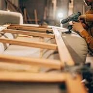

Cine Suntem Noi
Pasiune pentru Detalii și Calitate
Am început această călătorie din dorința de a transforma casele în cămine primitoare și elegante. Pentru noi, mobilierul nu reprezintă doar piese de utilitate, ci elemente centrale de design care reflectă personalitatea fiecărui client.
Fiecare proiect pe care îl realizăm combină tehnologia modernă de producție cu atenția meticuloasă la finisaje a meșteșugarilor noștri. Lucrăm doar cu furnizori de top pentru a ne asigura că materialele folosite – de la lemn masiv la MDF sau accesorii hardware – garantează o durabilitate de lungă durată.
Suntem specializați în mobilier personalizat, adaptat perfect spațiului tău, oferind consultanță completă de la faza de schiță 3D până la montajul final în locuința ta.

Ce Ne Ghidează
Calitate Premium
Nu facem compromisuri. Selectăm doar materiale rezistente și accesorii durabile pentru fiecare piesă.
Design Personalizat
Fiecare proiect este unic. Adaptăm dimensiunile, culorile și compartimentarea după nevoile tale exacte.
Încredere & Respect
Respectăm termenele de livrare stabilite și oferim transparență totală în privința costurilor.